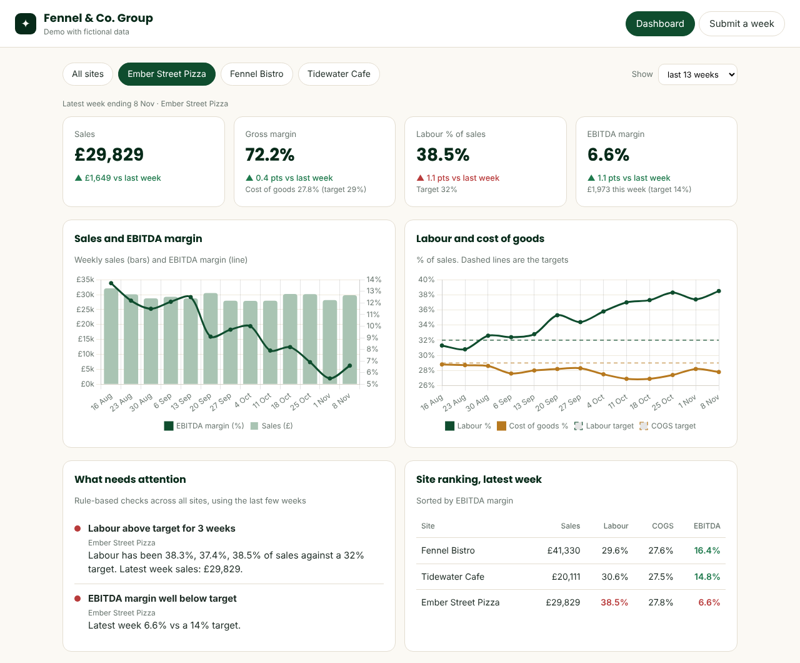

Weekly P&L dashboard for multi-site restaurants
One weekly view for every site, with automatic flags when labour or food cost drifts. In the demo data, labour at one site climbed from 31% to 38% of sales while its margin fell by more than half.
Hi, I am Fiorella. Commercial analyst, London.
I am Italian and Venezuelan, trained as an economist, and I spend my days in pricing, data and dashboards. On the side I build small tools for the questions real businesses ask. This page is where I keep them.

Each one starts from a question a real business asks and ends with something a manager can open and use. The companies are fictional, so I can show the work in full.
One weekly view for every site, with automatic flags when labour or food cost drifts. In the demo data, labour at one site climbed from 31% to 38% of sales while its margin fell by more than half.
Links supplier price changes to what each dish earns, so a cost spike gets an explanation and not only an alert.
Shows how much a festival or catering has to sell before it is worth taking on, with a good-day and a bad-day scenario.
Fennel & Co. Group is a fictional company. Every figure is generated sample data.
I am Fiorella Rojas, a commercial analyst and product-driven creator. After years working with data, analytics and financial strategy, I noticed that many people and small businesses struggle with money not because they lack discipline, but because they lack clear tools to see their numbers.
I started in hospitality, running a restaurant as General Manager at GUASA Group, then moved into analytics there before joining PostNord International as a Commercial Analyst. That is why my first project is about restaurants: I know the questions a manager asks because I used to be one.
I am based in London, trained as an economist in Venezuela, and I like work that crosses borders and languages.
FinProBalance is where I build those tools: dashboards, templates and worked examples that make financial information simple, visual and usable by people who are not analysts.
Tell me what you are trying to see, or just say hello.